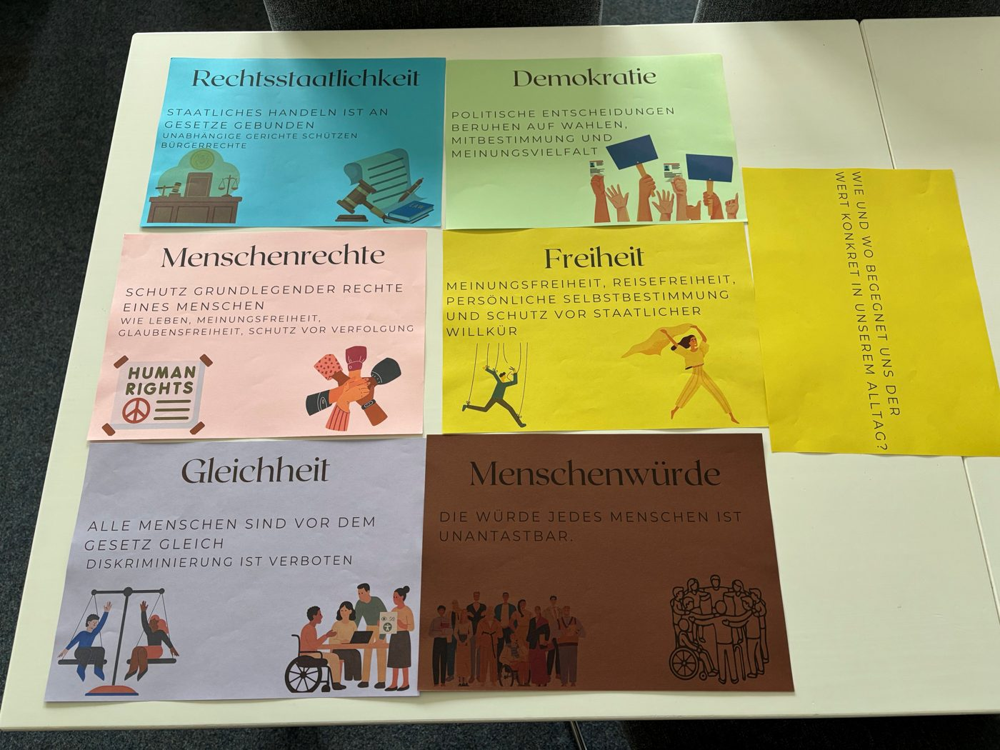
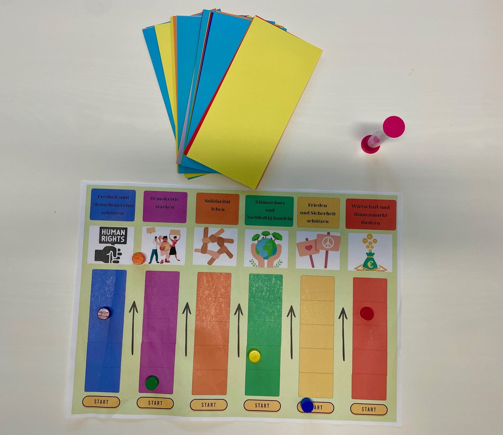
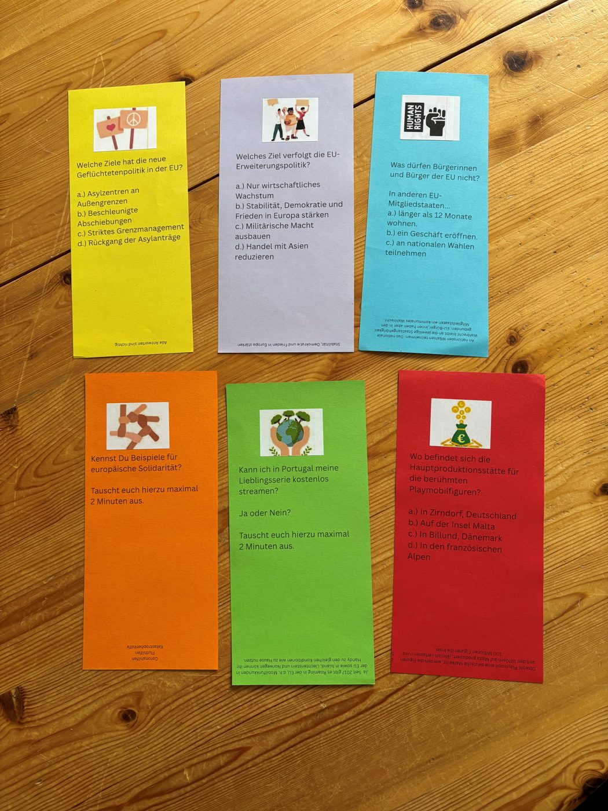

Human dignity
The dignity of every human being is inviolable.
A «values café»: participants discover the values and goals of the EU and relate them to their own lives — with a video, discussion rounds and the board game «Goal Game».
Authors: Corinna Benthack, Tabea Lotz, Christiane Meyer, Carmen Ripper
Participants get to know the fundamental values and the goals of the European Union and understand what they mean in everyday life. They also discover that these goals can conflict with one another and that the Member States do not always see them the same way.
Introduction to the project «Europe Can Be Liked» and why values and goals matter.
5 minThree statements about the EU are read out; participants stand along an imaginary line in the room, from «I agree» to «I disagree». Then they count off from 1 to 6 to form six groups.
A short video introduces the core values of the European Union.
3 minEach of the six groups receives a value card with a guiding question and talks about it for 3–4 minutes; then the cards move on clockwise, until every group has discussed all six values. A final reflection follows in plenary.
about 25 minA short presentation explains the EU's goals in six thematic areas.
10 minIn groups of 4–5, participants answer knowledge questions and discuss open questions, moving the pieces of the six EU goals forward.
30 minOne question for everyone, with a short answer and no discussion: «What have you learnt?»
5 minThe video shown in the workshop to introduce the values of the European Union.
The video is available in German and English: it plays in German if the page is in German, otherwise in English.
The six cards discussed by the groups in the «values café».
The dignity of every human being is inviolable.
Freedom of expression, freedom of movement, personal autonomy and protection against arbitrary state action.
Political decisions are based on elections, participation in decision-making and a diversity of opinion.
All people are equal before the law. Discrimination is prohibited.
Government action is bound by law. Independent courts protect civil liberties.
Protection of a person's fundamental rights: the right to life, freedom of expression, freedom of religion, protection from persecution.
Guiding question for every card: «How and where do we actually encounter this value in our everyday lives?»
The six thematic areas of the presentation — they are also the six coloured paths of the board game.
Human rights are universal: freedom from discrimination, protection of minorities, freedom of speech, religion, artistic expression and occupation.
EU citizens can express their opinions freely, elect their representatives and have a say in their future. The «Defence of Democracy» package protects democratic life and promotes citizen participation.
Economic, social and territorial cohesion among Member States. Examples from the four partner countries: Latvia sheltered 43,000 people from Ukraine; Poland received EU funds after floods in the Carpathian foothills; Italy contributes to the structural funds for poorer regions; Germany is the largest net contributor.
Meeting today's needs without compromising future generations: climate neutrality by 2050, environmental protection, organic farming and renewable energy.
«The EU is a peace project»: in 2012 it received the Nobel Peace Prize for peace and reconciliation, democracy and human rights.
Free movement of goods, people, services and capital; a competitive, stable and innovative economy; better living conditions, fewer inequalities and stronger workers' rights.
In groups of 4–5. Each group has a board with the six EU goals, one coloured piece per goal and a pile of cards. One card is drawn per round.
The group answers the question together; the answer is printed in small type at the bottom of the card. If it is correct, the piece of that goal moves forward one step. Some questions are light-hearted, to liven up the game.
The group discusses the topic for 2 minutes, timed with an hourglass or a stopwatch, then reads the input at the bottom of the card. The piece moves forward one step.
The game ends after 30 minutes, or as soon as all six goals have reached the last step.
The original materials made by the German team (in German). Tap a photo to enlarge it.



The original materials prepared by the German team, ready to print and use. For each item, use the buttons to open the file in German (DE) or English (EN).
Note: the files are the German team's originals, so they exist only in German (DE) and English (EN). The page itself is translated into all languages.